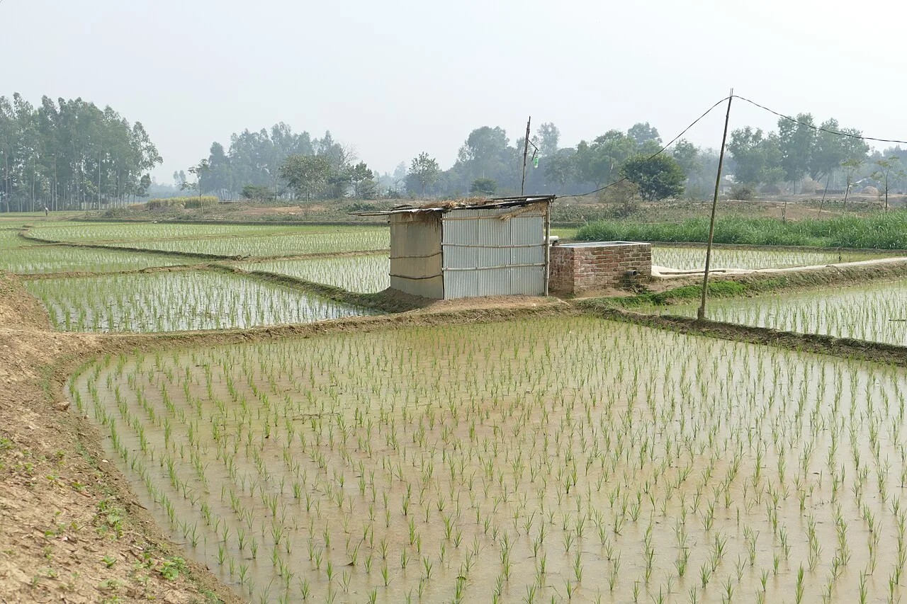

বর্তমান পরিস্থিতিThe situation
ভূমি-বিরোধের প্রেক্ষাপট ও ঘটনাক্রম। এটি সংবাদের সরাসরি সম্প্রচার নয় — প্রতিটি তথ্যের পাশে সূত্র ও তারিখ দেওয়া আছে। Background and chronology of the land conflict. This is not a live news feed — every claim carries a numbered source and a date.
গোবিন্দগঞ্জ: ঘটনাক্রমGobindaganj: a timeline
সবচেয়ে বেশি আলোচিত বিরোধটি গাইবান্ধা জেলার গোবিন্দগঞ্জ উপজেলার সাহেবগঞ্জ–বাগদাফার্ম এলাকার। অধিগ্রহণ, ১৯৬২ সালের চুক্তি, ২০১৬ সালের সহিংসতা এবং তার পরের মামলার অবস্থা — চারটি আলাদা বিষয়, নিচে আলাদা করে দেওয়া হলো। The most widely reported dispute is in the Sahebganj–Bagdafarm area of Gobindaganj upazila, Gaibandha district. The acquisition, the 1962 agreement, the 2016 violence and the case status since are four distinct things, separated below.
-
১৯৫৫–৫৬1955–56
জমি অধিগ্রহণThe land is acquired
রংপুর চিনিকলের আখের খামারের জন্য এলাকার জমি অধিগ্রহণ করা হয়। দ্য ডেইলি স্টারের দলিলভিত্তিক প্রতিবেদনে অধিগ্রহণের সময় ১৯৫৫–৫৬ বলা হয়েছে।6 Land in the area is acquired for the Rangpur Sugar Mill's sugarcane farm. The Daily Star's document-based reporting dates the acquisition to 1955–56.6
-
৭ জুলাই ১৯৬২7 July 1962
চুক্তি ও তার শর্তThe agreement and its conditions
চুক্তির ৩ নম্বর শর্তে আখের খামারের উদ্দেশ্য বজায় রাখার কথা বলা হয়। ৫ নম্বর শর্তে বলা হয়, সেই উদ্দেশ্য পরিত্যক্ত হলে জমি সরকারের কাছে সমর্পণ করতে হবে, যাতে তা অবমুক্ত ও পুনরুদ্ধার করা যায়। পরিবারগুলো এই শর্তের ভিত্তিতেই জমি ফেরত চায়।6 Clause 3 of the agreement preserves the sugarcane-farm purpose. Clause 5 requires the land to be surrendered to the government for release and restoration if that purpose is abandoned. Families rely on these provisions in seeking restitution.6
-
৬ নভেম্বর ২০১৬6 November 2016
উচ্ছেদ, সংঘর্ষ ও অগ্নিসংযোগEviction, violence and arson
উচ্ছেদকে কেন্দ্র করে সংঘর্ষ ও অগ্নিসংযোগের ঘটনায় তিনজন সাঁওতাল নিহত হন: মঙ্গল মার্ডি, রমেশ টুডু ও শ্যামল হেমব্রম।7 Eviction-related violence and arson killed three Santal men: Mongal Mardi, Ramesh Tudu and Shyamal Hembrom.7
-
৬ নভেম্বর ২০২৫6 November 2025
মামলার অবস্থা: নয় বছরেও বিচার শুরু হয়নিCase status: no trial nine years on
দ্য ডেইলি স্টারের প্রতিবেদন অনুযায়ী ঘটনার নয় বছর পরেও হত্যা মামলার বিচার শুরু হয়নি। এই অবস্থা ওই প্রতিবেদনের তারিখ অনুযায়ী; পরে কী হয়েছে তা এখানে নেই।7 The Daily Star reported that nine years after the killings the murder trial had still not begun. This status is dated to that report; anything after it is not recorded here.7
মামলার অবস্থা বদলায়। এখানে যা লেখা আছে তা সর্বশেষ যে প্রতিবেদনটি যাচাই করা হয়েছে সেই পর্যন্ত। সাম্প্রতিক অগ্রগতির জন্য সূত্রগুলো সরাসরি দেখুন। Case status changes. What is written here runs only to the last report checked. For later developments, go to the sources directly.

{kind=link}
কাঠামোগত কারণStructural causes
সাঁওতাল পরিবারগুলোর ভূমি হারানো বিচ্ছিন্ন কোনো ঘটনা নয়। কয়েকটি কারণ বারবার ফিরে আসে। Santal families losing land is not a series of isolated incidents. A few causes recur.
অর্পিত সম্পত্তি প্রত্যর্পণVested-property restitution
এ ধরনের সম্পত্তির ক্ষেত্রে অর্পিত সম্পত্তি প্রত্যর্পণ আইন, ২০০১ প্রাসঙ্গিক। নির্দিষ্ট জমির তালিকাভুক্তি ও মালিকানার নথি নিয়ে আইনি সহায়তা নিন।1 The Vested Property Return Act, 2001 is relevant to this category of property. Seek legal assistance with the listing and ownership documents for the particular land.1
জমির দখল ও প্রমাণের সংকটDispossession and proving a claim
মৃণাল দেবনাথের কেস স্টাডিতে দেখানো হয়েছে, ভূমি দখল সাঁওতাল সমাজের জীবিকা ও সামাজিক সম্পর্ক দুটোই ক্ষয় করে।11 Mrinal Debnath's case study examines how land grabbing damages both Santal livelihoods and social relationships.11
রাষ্ট্র ও বেসরকারি পক্ষের ভূমিকাState and private actors
কাপেং ফাউন্ডেশনের জানুয়ারি–জুলাই ২০২৫-এর প্রতিবেদনে পাহাড় ও সমতলে উভয় ধরনের পক্ষের ভূমি দখলের ঘটনা নথিভুক্ত হয়েছে। একই প্রতিবেদনে গোবিন্দগঞ্জের ঘটনায় জবাবদিহির ধীরগতিকে চলমান উদ্বেগ হিসেবে উল্লেখ করা হয়েছে।10 Kapaeeng Foundation's January–July 2025 report documents land-related violations involving both state and non-state actors in the hills and the plains. The same report identifies the slow response to the Gobindaganj killings as an ongoing human-rights concern.10
সমতলের ভূমি কমিশনের দাবিA land commission for the plains
৬ আগস্ট ২০২৬ ঢাকার এক সেমিনারে আদিবাসী অধিকারকর্মীরা সমতলের জন্য স্বাধীন ভূমি কমিশন গঠন এবং প্রথাগত ভূমি-অধিকারের স্বীকৃতির দাবি জানান।8 At a Dhaka seminar on 6 August 2026, Indigenous rights advocates called for an independent land commission for plainland communities and for recognition of customary land rights.8
এই সাইট কী করতে পারে, কী পারে নাWhat this site can and cannot do
আমরা মামলার তথ্য সংগ্রহ বা সংরক্ষণ করি না। We do not gather or store case information.
কোনো পরিবার বা স্বেচ্ছাসেবক কোনো ঘটনা নথিভুক্ত করতে চাইলে সেটি এমন প্রতিষ্ঠানের মাধ্যমে করা উচিত যাদের আইনজীবী আছে এবং যারা তথ্য নিরাপদে রাখতে পারে — তালিকা দেখুন। কেন আমরা নিজেরা কোনো ফর্ম রাখিনি, তার ব্যাখ্যা এখানে। If a family or a volunteer wants an incident documented, that should go through an organisation with lawyers and the means to hold the information safely — see the directory. Our reasons for having no form of our own are set out here.